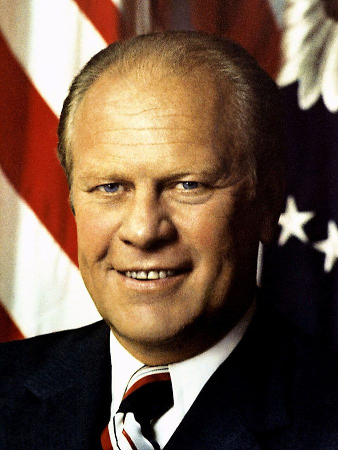
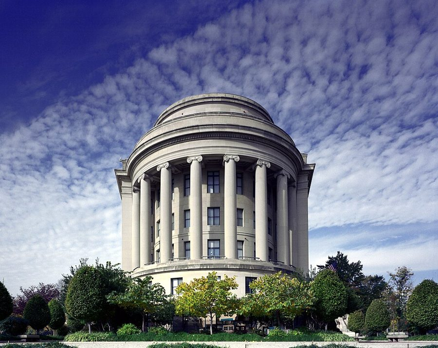

这一章在做什么
1974 年夏到 1976 年秋，四十四到四十六岁，从华盛顿回 U.C.L.A. 教书。两年里他把几件旧事一件件了结：婚姻、华盛顿留下的研究、一段老交情，还搭上一次没成的任命；同时开始筹划一本新书，年中搬去北加州。
第 1 节就说这是许多事的「最后一章」。读的时候数一数：他关上了哪几扇门，又开了哪几扇。
1975 1976 1977
住处
Venice
Marina del Rey
Palo Alto
和家人同住
工作
U.C.L.A.（1975 年秋季学期休假）
研究中心
华盛顿
白宫午餐
白宫辩论
FTC 提名
私事
搬出来
离婚谈定
9 月 8 日认识 Mary
本站示意图。书里给了日期的只有 1975 年 2 月、9 月和 1976 年 9 月 8 日，其余按「年中」「冬天」估着画；从家里搬出来那天书里没给日期。
出场的人
这一页有名字的人不多，没名字的反而要紧：妻子、打电话劝他离婚的人、那位当了阁员的老师，书里都没给名字。
Al my radical friend，男，住纽约 第 6 章认识的老朋友，家境优裕的黑人左派。这一页出现三次：第 5、6 节是电话，第 9 节是一封信。
my wife 第一任妻子，全书没有名字 第 9 章末尾婚姻已经在散。这一页里他搬了出去，接着是离婚官司。
the children 儿子 John，女儿 Lorraine 这一页多半只说 the children、my son。他每周三、周日去接他们。
Margo 和 Yolande /ˈmɑːrɡoʊ/，t 不发音；两位都是女的 第 9 章华盛顿那个研究项目里的旧部下，第 3 节替他去新奥尔良收集数据。
Charles、William、Mary Frances 亲生的哥哥姐姐 第 3 章在华盛顿相认的那一家。第 4 节用三句话交代他们的心脏病。
President Ford Gerald Ford /ˈdʒerəld/ 当时的总统。第 6 节请他吃午饭，第 8 节听他辩论，第 10 节提名他。
Kenneth Arrow /ˈæroʊ/ 经济学家，1972 年诺贝尔奖得主。第 8 节辩论里站在赞成一方。
Andrew Brimmer /ˈbrɪmər/ 经济学家，美联储理事会的第一位黑人理事（1966–1974）。第 10 节打电话劝他接受任命。
Chuck Michaels Chuck 是 Charles 的小名 参议院那个委员会主席的高级助手，第 10 节里唯一对他说实话的人。
Mary Palo Alto 的律师，女 第 12 节出场。读了他的文章，有不同看法。
两个白宫的人。 第 6 节凑过来说悄悄话的 staffer，和第 10 节的 White House staffer / my White House contact 不必是同一个人。第 10 节从头到尾打电话、最后追到街角的是同一位；顺路用车捎他去国会山的是另一位。
背景：作者默认你知道的事
章名是一首歌
Arrivederci 是意大利语的「再见」，读 /əˌriːvəˈdertʃi/。美国人最熟的出处是 1955 年的意大利歌 Arrivederci Roma （再见，罗马），后来也有英文版。书里没说章名取自哪里，这是本站按字面对上的，不算确凿。
这一章从头到尾在告别。向哪些东西告别，第 1 节只给了一句预告，答案散在后面各节。
福特，和 1976 年这个大选年

福特的官方肖像，1974 年 8 月，上任当月。David Hume Kennerly，公有领域，维基共享资源 福特（Gerald Ford）是共和党人。1974 年 8 月尼克松因水门事件辞职，副总统福特接任。1976 年他要竞选连任：党内先和里根争提名，11 月输给民主党的卡特。
这两年国会两院都由民主党占多数。第 10 节里人人挂在嘴边的 election year 指的就是 1976。
affirmative action
中文常译「平权措施」。1960 年代起，联邦政府要求和它有合同往来的雇主主动增加少数族裔的雇用；到 1970 年代初，拿联邦经费的大学也要订出聘用少数族裔和女性教员的目标和时间表。
支持者认为这是纠正长期的歧视。作者是公开反对它的黑人学者里最有名的一位，第 2 节讲的是他的一条理由：凭本事进来的人也跟着被怀疑。书里他总给这个词加引号。
联邦贸易委员会，和「提名—确认」

华盛顿的联邦贸易委员会大楼，在宾夕法尼亚大道上，白宫和国会山之间。照片是 2005 年拍的。Carol M. Highsmith，公有领域，维基共享资源 Federal Trade Commission（F.T.C.）1914 年成立，管反垄断和保护消费者。五名委员（Commissioner），任期七年，同一个党最多三人。
委员由总统提名（nominate），要参议院确认（confirm）才能上任：先由主管的委员会开听证会（confirmation hearing），再交全院表决。排不排听证，由委员会说了算。
白宫（共和党）
参议院（民主党占多数）
总统提名 nominate
填表、调查 F.B.I. 查背景
委员会听证 hearing
全院表决 confirm
上任
停在这里
委员会一直不排听证
拖过 11 月大选，位子就留给下一任总统来提名
本站示意图。不用投票否决，只要不排听证，提名就一直悬着。为什么这样做、白宫知不知道，是第 10 节后半的内容。
《公共利益》那一圈人
The Public Interest 是 Irving Kristol 和 Daniel Bell 1965 年办的政策季刊，第 9 章里 Kristol 出钱让他研究 Dunbar 高中，第 3 节的新文章也登在这里。
白宫午餐的另两位客人是同一个圈子的：Edward Banfield，哈佛的政治学家；Gertrude Himmelfarb，研究维多利亚时代英国的历史学家，Kristol 的妻子。这些人被叫作「新保守派」。Al 嘴里的 those people 把他们都算在内。
从洛杉矶到斯坦福
加州
洛杉矶西边（放大）
太平洋
旧金山
Palo Alto 斯坦福
优胜美地
洛杉矶
约 300 英里
480 公里，开车
太平洋
Ventura Freeway
家
山
U.C.L.A.
天天往返
Venice 小公寓
Marina del Rey
本站示意图，方位大致对，距离不成比例。「家」只表示它在 Ventura Freeway 那一线、离学校远；书里没说具体在哪。
他 1976 年去的 Center for Advanced Study in the Behavioral Sciences（行为科学高等研究中心）1954 年成立，在斯坦福校园边的小山上，每年请几十位学者来住一年，不用教书，只做自己的研究。
胡佛研究所（Hoover Institution）在斯坦福校内，1919 年由后来的总统胡佛创办。
优胜美地山谷。左边的峭壁是 El Capitan，右边是 Bridalveil 瀑布，正中远处是 Half Dome。第 12 节他两次来都碰上下雨。Diliff，CC BY-SA 3.0，维基共享资源
留个记号：后面还会回来
这一页里作者自己打了三处「当时不知道」的记号，另有两条是从前面接过来的线。
《纽约时报》的那篇文章 第 11 节 搬家装车时来了个摄影师，他当时觉得是小事。作者说后来它带出了意想不到的后果，还说一个标签从此贴上了。第 12 节先兑现了一个。
Mary 和优胜美地 第 12 节 他说这两样后来成了生活里固定的东西。只记下这句话就行。
那本讲「决策」的书 第 7、12 节 第 7 节只说要写，第 12 节给了书名 Knowledge and Decisions 。这本书写得怎样、带来什么，是下一页的主线。
Al 这条线 第 5、6、9 节 从第 6 章一路开玩笑开过来的朋友。把这一页的三次出场连起来读，看口气是怎么变的。
Dunbar 的续篇 第 3 节 第 9 章写过华盛顿的 Dunbar 高中。这里把同一个问题拿到好几所学校去问。
词与短语
词条按书里出现的顺序排，小标题是原书用 • • • 隔开的各节。斜体小字是那句话里的几个词，在 Kindle 里搜它就能跳到那一句。单个的生词长按就能查，这里收的主要是词典帮不上忙的。
第 1、2 节 · 走正门进来的
little did I know
… But little did I know that …
我当时哪里知道
否定词提前、主谓倒装的固定说法，专门用来预告后面的转折。
the closing chapter
… the closing chapter of many aspects …
最后一章，收尾的一段
chapter 指人生的一个阶段。第 7、9 节还有 closing out old chapters ，这一章反复用这个比方。
come in the front door
… but Sowell came in the front …
是走正门进来的（凭真本事）
反面是下一段的 the back door ：靠照顾进来。学生没说出口的那半句才是重点。
a more substantial record
… after accumulating a more substantial record. …
一份更有分量的履历
record 指做出来的成绩：论文、著作、教龄。
affirmative action
… was “affirmative action” hiring of minority …
照顾少数族裔的聘用政策
见上面的背景。引号是作者加的，表示他不认这个名目。
revealing
… often some revealing phrase that let …
露了底的，说漏了心思的
不是「启发人的」。一句话无意中让人看出说话人原先怎么想。
pleasantly surprised
… they had been pleasantly surprised. …
没想到（这位黑人教授）教得好
字面是好话，要反着读：惊喜说明原先没抱指望。
signs of the times
… of the signs of the times, …
时代风气的一个征兆
固定说法，出自《圣经》，多半带贬义。
fruits
… one of the fruits of “affirmative …
结出来的果子，后果
fruits 本来指好成果，这里是讽刺。
第 3 节 · 自己名下的经费
efficiency apartment
… was actually an efficiency apartment with …
一居一体的小单间公寓
美国租房用语：卧室、客厅、小厨房在一间里。和「效率」无关。
living quarters
… such places as living quarters rather …
住的地方
quarters 复数 = 住处，原是军队用语。这半句是伏笔，第 4 节他自己住了进去。
come up with the money
… I could come up with the …
把钱凑出来
come up with 用在钱上是「筹到」，用在主意上是「想出」。
understandably concerned
… was understandably concerned about the bills …
着急了，这也难怪
往轻里说。旅馆经理是怕收不到钱。
run up bills
… about the bills being run up. …
账越欠越多
run up a bill / a debt：一笔笔累积起来。
ghetto school
… was a ghetto school in Brooklyn, …
贫民区里的学校
ghetto 在美国指城里穷困的少数族裔聚居区。
above their grade level
… or more above their grade level. …
超过所在年级应有的水平
美国按年级给阅读能力定标准。四年级学生读到五年级水平，就是 a year above grade level 。
sit in on
… I sat in on several classes, …
旁听
后面强调是他自己随手挑的班，不是校方安排好的。
broken homes
… with children from broken homes and …
父母离异或缺一方的家庭
不是房子破。home 是家庭。
on welfare
… and on welfare, why couldn’t it …
靠政府救济金过日子
welfare 在美国专指给穷人的公共救济，不是泛泛的「福利」。
第 4 节 · 搬出来
Ventura Freeway
… work on the Ventura Freeway, and …
文图拉高速公路
洛杉矶北边东西走向的高速路，出名地堵。freeway 是加州对高速公路的叫法。
estrangement
… a growing estrangement between my wife …
越来越疏远
读 /ɪˈstreɪndʒmənt/。这一节的关键词。
accede to
… I had acceded to her desire …
依了，让步答应
读 /əkˈsiːd/，容易听成 exceed。
finish off
… I never finished off either the …
喝完，吃完
啤酒和阿司匹林是为难熬的日子备的，结果都没用完。这是全节的要点，他用两句短话说完。
support two households
… economize while supporting two households. …
养两个家
support = 供养。household 是「一户」。
weigh on my mind
… my marriage weighing on my mind. …
压在心上
pass up
… I passed up so many offers …
谢绝，放过不要
teetotaler
… if I were a teetotaler. …
滴酒不沾的人
读 /ˌtiːˈtoʊtələr/，和 tea 无关。
literally
… have saved my life literally. …
不是比方，是真的（救了命）
前面电话里那句「毁了你的一生」是比方；这里说的是心脏病，下面三句就是证据。
the appointed time
… minutes before the appointed time. …
约好的时间
appoint 这里是「约定」，不是任命。
alimony and child support
… offer of alimony and child support …
赡养费和子女抚养费
alimony /ˈælɪmoʊni/ 是离婚后付给前配偶的生活费，两笔钱分开算。
out of hand
… was rejected out of hand as …
想都不想就（拒绝）
和上面的 in hand 不是一对。另一个意思是「失控」，这里不是。
award
… the judge awarded less alimony and …
（法官）判给
不是颁奖。判下来的数目比他当初肯给的还少，这是这一段的讽刺所在。
custody
… was custody of the children. …
孩子的抚养权
custody battle / fight / hearing ：争抚养权的官司、庭审。
the eleventh hour
… right up to the eleventh hour. …
最后一刻
出自《圣经》里葡萄园工人的比喻，不是真的十一点钟。
call it off
… show up, to call it off. …
取消
他给律师的指示：我要是没到，就撤掉这场听证。
the wee hours
… in the wee hours of the …
凌晨一两点到三四点
wee 是苏格兰话的「小」，指钟点数字还小的时候。
第 5、6 节 · Al 的两个电话，白宫的午饭
radical
… was my radical friend Al in …
激进左派的
在美国政治里 radical 比 liberal 更靠左。全书提到 Al 都带这个词，像个绰号。
what day he goes to church
… attorney what day he goes to church.” …
他哪天去做礼拜
绕着弯说「我没问他是不是犹太人」：基督徒星期天去教堂，犹太人星期六去会堂。
awed by
… was awed by Jews. That was …
对……又敬又怕
awe 读 /ɔː/。这一节的结论就在这个词上。
in honor of the occasion
… In honor of the occasion, I …
为了隆重其事
庄重的套话，后面接的是「把唯一一套好西装送去补」。自嘲，也在说他那时有多拮据。
move up
… The lunch was moved up to …
（时间）提前
日程往「上」挪是提前，push back 是推后。所以他迟到了。
where you were last night
… to ask where you were last …
你昨晚在哪儿过的夜
玩笑话：我们把全城旅馆都问遍了也没找到你，至于你睡在哪儿，就不问了。
make the media
… This little meeting made the media. …
上了新闻
make the papers / the news 同一个用法：够得上被报道。
old stuff
… political differences were old stuff, but …
老一套了，早就习惯的事
those people
… be with those people?” he asked. …
那帮人
不点名，带着嫌恶。指福特政府和同桌的保守派文人。
第 7 节 · 了结旧事
close out
… spent closing out old chapters in …
了结，收尾
本是商店清仓、账户销户的说法。
a major departure
… was a major departure in my …
一次大的转向
departure 不是「出发」，是偏离原来的路子。
anxious to
… was ready and anxious to move …
急着想
anxious to do 是迫切，不是焦虑。
tied up in
… no longer being tied up in …
被……占住，脱不开身
第 9 节 had tied him up 是同一个意思。
speaking engagements
… my writing and speaking engagements, and …
受邀去做的演讲
engagement = 约好的活动，和订婚无关。在美国这是有报酬的。
quarter
… took the fall quarter off on …
学期（一年分三段的那种）
U.C.L.A. 实行 quarter 制：秋、冬、春三个学期，各十周左右。sabbatical leave 是教授的带薪学术休假。
visiting fellow
… become a visiting fellow during the …
访问研究员
fellow 在研究机构里是一种职位，不是「家伙」。第 11 节的 fellowship 是这个名额。
第 8 节 · 在总统面前辩论
the merits of
… debating the merits of “affirmative action” …
……的是非利弊
merits 复数不是「优点」，是一件事本身站不站得住。
“pro” and “con”
… both the “pro” and “con” side. …
正方和反方
下一句的 The former 指 pro 一方。
cram session
… more good than a cram session. …
临阵磨枪的突击准备
cram 是考前死塞。他把人家说的 strategy session 换了个不客气的叫法。
Johnny Carson
… my room, watch Johnny Carson, and …
看卡森的节目
Carson 从 1962 到 1992 年主持 NBC 的深夜脱口秀 The Tonight Show 。「看 Johnny Carson」就是睡前看会儿电视。
go counter to
… that study went completely counter to …
和……完全相反
lay out
… and I laid this out in …
一条条摆出来讲
wry smile
… He had a wry smile as …
苦笑，带点自嘲的笑
wry 读 /raɪ/，w 不发音。后面的 heft 是用手掂分量。
cross-roads
… we came to a cross-roads. Perhaps, …
岔路口，要作抉择的关头
这位阁员的意思：当年选了这条路，如今知道了也回不去。
politically prophetic
… His words were politically prophetic. …
在政治上说中了
prophetic /prəˈfetɪk/ 是「有预见的」。说中的是「回不去」那半句，不是夸他有远见。
第 9 节 · 给 Al 的信
visions
… have differing visions of the way …
对世界怎样运转的整体看法
不是视力，也不是愿景。这是作者后来的核心用词，1987 年他有一本书就叫 A Conflict of Visions 。
et al.
… Kristol, Banfield, et al., on the …
等人
拉丁文缩写，读 /et ˈæl/。听书时别和 Al 这个名字搅在一起。
bogey-man talk
… labelling and almost bogey-man talk. …
拿妖怪吓人式的说法
bogeyman 是大人吓唬小孩的鬼怪。指把对手说成恶魔。
call them as he saw them
… call them as he saw them, …
看到什么就照实说什么
棒球裁判的话：我怎么看见就怎么判。them 不指具体的东西。
spin out
… to simplistic visions spun out by …
编织出来，一套套讲出来
spin 是纺线，引申为编故事。simplistic 是「过分简单化的」，比 simple 贬。
withdrawal
… The later agony of withdrawal of …
（从那套信念里）退出来
这个词也指戒毒时的戒断反应，作者是有意借这层意思。
parlor revolutionism
… of this kind of parlor revolutionism, …
客厅里的革命空谈
parlor 是老式人家的客厅。坐在客厅里喊革命、自己不担风险的人叫 parlor revolutionary ，下一段他把这顶帽子给了 Al。
so be it
… ended our friendship, so be it. …
那就这样吧
古旧的虚拟语气。认了，不打算挽回。
第 10 节 · 一次提名
rule it out
… I wouldn’t rule it out, just …
把它排除掉
「没想过，所以不一口回绝」。很弱的表态，对方却当成了有门。
off the top of my head
… off the top of my head. …
不假思索，随口
put up or shut up
… to put up or shut up, …
要么自己上，要么闭嘴
put up 原是下注掏钱。你批评别人干得不好，那你来干。
left dangling
… I don’t get left dangling.” …
被吊在半空，不上不下
他事先提的唯一条件。后来发生的正是这个。
submit to
… forms and submit to an F.B.I. …
接受（调查）
不是「提交」。被提名的联邦官员都要过联邦调查局的背景审查。
the easiest to answer
… the easiest to answer—unfortunately. …
最好答的（因为没什么可填）
破折号后补一个 unfortunately：财产一栏好填，是因为离婚官司把钱打光了。
fed questions
… Senators were being fed questions with …
有人把问题递到参议员手里
feed 某人 information / lines：在背后给他递材料。
confirmation hearings
… me during the confirmation hearings by …
确认提名的听证会
见上面的流程图。ambush 是伏击。
conflict of interest
… of a conflict of interest. …
利益冲突
候任期间不能从归 F.T.C. 管的企业拿钱，所以演讲和稿费的收入也断了。
Capitol Hill
… go up to Capitol Hill to …
国会山
国会大厦所在的小山。后面的 up on the Hill 也是它，Hill 大写。
check out
… none of which checked out. …
经核实属实
不是退房。别人告他的那些事，查下来一条也不成立。
with a fine tooth comb
… record with a fine tooth comb …
拿细齿梳子过了一遍，查得极细
sail right through
… would have sailed right through. …
顺顺当当就通过了
our man
… we think our man is going …
我们这边的候选人
说话的是民主党参议员的助手，指的是民主党的总统候选人。
straight answers
… the first straight answers I’ve gotten.” …
不绕弯的实话
对刚刚告诉他「你过不了」的人道谢，是真心的。
hem and haw
… He began to hem and haw. …
支支吾吾
hem、haw 都是清嗓子、拖时间的声音。
turn on my heel
… I turned on my heel and …
掉头就走
grossly
… had been grossly misled on my …
严重地，离谱地
gross 这里不是「总的」也不是「恶心」，是程度极重。mislead 的过去分词 misled 读 /ˌmɪsˈled/。
held up
… was likely to be held up, …
被卡住，拖着不办
不是「举起」或「抢劫」。
heads I win, tails you lose
… was a heads-I-win-and-tails-you-lose situation …
正面我赢，反面你输
抛硬币的说法，heads 是有人头的一面，tails 是背面。怎么抛都是一方赢。
a political issue
… would have a political issue, with …
一个可以拿来做文章的题目
have an issue 在竞选语境里是手里有了攻击对手的话柄，不是「遇到问题」。
第 11、12 节 · 往北搬
incidental
… and the article seemed incidental. …
顺带的小事
不是 accidental（意外的）。
up in the 80s
… city was up in the 80s! …
升到了华氏八十多度
合摄氏 27 到 31 度。旧金山夏天常年凉而多雾，这点温度在别处不算新闻。
pending
… However, pending delivery of the furniture, …
在……到来之前
这里是介词。cot 是行军床那样的小窄床。
very little to show for it
… very little to show for it. …
没什么拿得出手的东西
have something to show for 一段时间：这些年没有白过的证据。
scholar in residence
… as a scholar in residence at …
驻所学者
住在一个机构里专心做自己的研究，没有教学和行政。think tank 是智库。
teaching chores
… nor any teaching chores as in …
教课这摊杂活
chores 是扫地洗碗一类的家务。他已经这样叫教书了，留意这个口气。
put the calls through
… not put the calls through to …
把电话转接进来
那时机构的电话都经总机（switchboard）人工转接。
hash things over
… for lunch to hash things over …
把分歧摊开来细谈
hash 原是把肉剁碎。
considerate
… she was such a considerate person. …
体贴，肯替别人着想
不是 considerable（相当大的）。
permanent features
… to become permanent features of my …
长久不变的一部分
feature 是构成某物的固定部分。were to become 是全书常用的「后来果然」。
值得停下来的句子
“I don’t mind debating smart people,” I said. “It’s debating stupid people that’s hard.— 第 8 节，白宫辩论的前一晚，别人催他去开准备会。本站译：「跟聪明人辩论我不怵，难的是跟蠢人辩。」
后半句是强调句 It’s … that’s hard ，重音落在 stupid 上。听上去像一句俏皮话，理由在他紧接着说的那句里：对手又聪明又诚实，所以清楚自己立场的短处。
他对「可以辩论的人」的要求就是这两条。第 9 节给 Al 的信，写的是同一件事的反面：不回应论点，只给人贴标签。两处放在一起读。
I realized that I was almost one fourth as old as the country itself, and had very little to show for it.— 第 11 节，1976 年 7 月 4 日，空公寓里看建国二百周年庆典的电视转播。本站译：我发现自己的岁数差不多是这个国家的四分之一了，却没什么拿得出手的。
算术是 46 比 200。这时他已经是正教授，出过好几本书，进过两次白宫，所以这句话不能按履历读。它说的是眼前：一张桌子、一张小床、一台放在地上的电视。
这是全章的最低点，写法仍然是一句算术加一句轻描淡写。下一节第一句就告诉你，这一年其实是转折。
检查一下理解
先在心里答，再点开。答错的那题，回书里把那一节再读（或再听）一遍。
1. 学生说他是「走正门进来的」，这是夸他，他为什么反而不安？ 对他本人是夸。让他不安的是这句话的另一半：在这些黑人学生眼里，别的黑人教授、也许还有黑人学生，是走后门进来的。他接着问的是，连黑人学生都这么想，白人学生会怎么想。
2. 那个学生问 “Are you sure?”，作者把这件事算在谁头上？ 没算在学生头上。他说这是时代的征兆，是照顾性聘用政策的后果：学生默认黑人教授未必够格。他拿自己作对比，1962 年刚教书、没有博士学位时，得到的尊重反而更多。
3. 抚养权开庭那天他没到，是睡过头误了事吗？ 不是。他前一天就告诉律师：我要是没出现，就撤掉听证。夜里他想到凌晨，决定不打这场官司，决定之后才睡着，醒来已经过了九点。没到场就是他的答复。
4. Al 叫他找个犹太律师，他从这句话里看出了什么？ Al 平时对犹太人有敌意，这时却认定犹太律师最厉害。作者由此头一次意识到，Al 和许多敌视犹太人的人一样，对犹太人怀着敬畏，而这份敬畏多半正是敌意的一部分。他那句「没空问律师哪天去教堂」是在装糊涂。
5. 白宫那场辩论，他的研究说服了在场的人吗？结果怎样？ 那位当过他老师的阁员承认，要是当年就知道这些，也许会走另一条路，但现在回不去了。作者说这话在政治上说中了：辩论之后什么也没变。
6. 联邦贸易委员会的提名为什么没成？是因为有人反对他吗？ 不是。委员会查过他的记录，挑不出毛病，别人告他的事也都不成立。原因是大选年：参议院的民主党人估计自己的人会当选总统，想把位子留给新总统，所以干脆不开听证会。这一点他们几个月前就告诉了白宫，白宫没告诉他。他发现后自己撤回了提名。